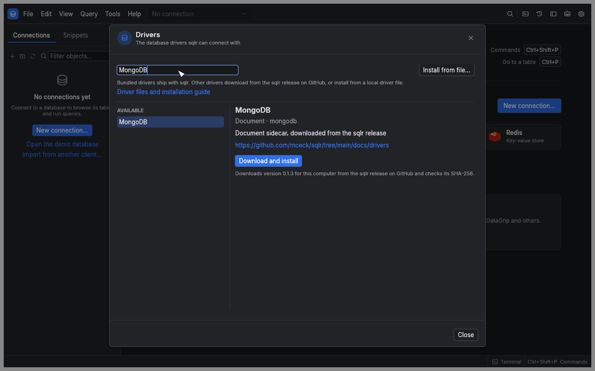

Manual › Configuration
Add and manage database drivers
A driver connects sqlr to a database. Bundled drivers are ready to use; sidecar drivers are installed separately and run as programs on your computer.
Check what you need
| Database | Driver setup |
|---|---|
| PostgreSQL, MySQL, MariaDB, SQL Server, Oracle, SQLite | Included with sqlr |
| Snowflake, Elasticsearch, Redis | Included with sqlr |
| MongoDB, DuckDB, SAP HANA | Install their native sidecar driver |
| Db2, ClickHouse, H2 or another JDBC database | Install a JDBC bridge and Java 17 or newer; supply the database's JDBC jar |
SQL Server and Oracle use native bundled drivers, so you do not need Java or Oracle Instant Client for those connections. Database compatibility entries in New connection may use an existing PostgreSQL or MySQL driver with appropriate defaults.
Download a driver
- Open Preferences, select Drivers, then open the Driver Manager. You can also find it in the command palette.
- Find the driver under Available.
- Choose Download and install.
- Wait for installation to finish, then create the connection.
The download comes from the GitHub release matching your sqlr version and your computer's platform. sqlr checks its SHA-256 before installing and starts it once to verify that it can answer. If the release has no archive for your platform, the error identifies the missing build.
Picking a database whose driver is missing opens the manager for that driver. After installation, the connection form opens. A saved connection with a missing driver shows Install… in the explorer. Opening the manager starts no download; choose Download and install when you are ready.

Install an archive from disk
- Choose Install from file… in the Driver Manager.
- Select the driver's
.tar.gzor.tgzarchive. - Review the path, driver ID, version, size and SHA-256.
- If you trust its origin, choose Install anyway.
Warning: A sidecar driver runs with your user account's permissions and receives the credentials for its connections. The local-file review displays its identity and checksum; it does not certify its author.
Installation fails if the archive is malformed, its identity does not match the program, or the program cannot start. A failed installation leaves no partially installed version.
Update, roll back or remove a driver
The manager groups entries into Installed, Built in and Available. Search to find a driver and select it to see its versions and actions.
| Action | What happens |
|---|---|
| Update to … | Downloads a newer version available for the running app's release |
| Activate … | Switches to an already installed version, including an older one |
| Remove … | Removes that version; another remaining version becomes active if needed |
| Remove driver | Removes every installed version after confirmation |
| Restart driver | Stops the sidecar so the next connection starts a fresh process |
Changing the active version stops the previous process. Reconnect affected connections to use the selected version. Removing the last version makes its saved connections unavailable until you install the driver again. Bundled drivers cannot be removed or replaced through this window.
A sidecar starts when first needed and stops after its idle timeout, five minutes by default. Change that timeout under Drivers in Preferences. A crash affects that driver's connections; reconnect to start a fresh process.
Connect to MongoDB
- Select MongoDB under Available in the Driver Manager, then choose Download and install.
- Create a MongoDB connection with the host, port, database and credentials, and choose the TLS settings your server requires.
- Open the connection and query or edit documents.
If you already have saved MongoDB connections, their settings and saved credentials stay in place. Driver MongoDB is not installed means this computer needs the separate driver. Choose Install…, install mongodb, then connect again. Collection browsing, paging, document editing, indexes, Data transfer and agent queries use the installed driver.
Connect to DuckDB or SAP HANA
DuckDB's native sidecar includes the database engine. After installing it, enter a database file path or :memory: for a temporary database. Choose read-only mode when you want to inspect an existing file without writing it. Java is unnecessary.
For SAP HANA, install the native HANA driver, then fill in its host, port, database and credentials. Use the driver's TLS fields when your server requires an encrypted connection.
Use the JDBC bridge
- Install Java 17 or newer and make it discoverable through
JAVA_HOME, the system Java installation on macOS orjavaonPATH. - Install the generic JDBC bridge or the relevant database preset.
- Obtain the JDBC jar from the database vendor and select it in the connection form. The bridge does not download database jars.
- For a generic connection, enter the JDBC URL and driver class. Additional jars can be supplied as a semicolon-separated list.
- Fill in the database credentials and test the connection.
Presets provide the URL shape and driver class. The database jar is still required unless the archive's author bundled it.
JDBC statements run in auto-commit mode; persistent transactions are unavailable. Metadata browsing depends on what the JDBC driver reports. A driver that ignores cancellation may have its process stopped, affecting its connections. The bridge supports relational databases rather than NoSQL protocols.
Add a driver your team maintains
You can install a compatible sidecar archive built by your team through the same file-review flow. Driver developers can start with the driver template. Keep end-user credentials out of test archives and distribute a separate archive for each supported platform.
Related
- Connections: fill in the form supplied by the selected driver.
- Settings and shortcuts: configure driver properties and idle timeout.
- Troubleshooting: investigate installation or process failures.
← Document and key-value databases · Settings and shortcuts →